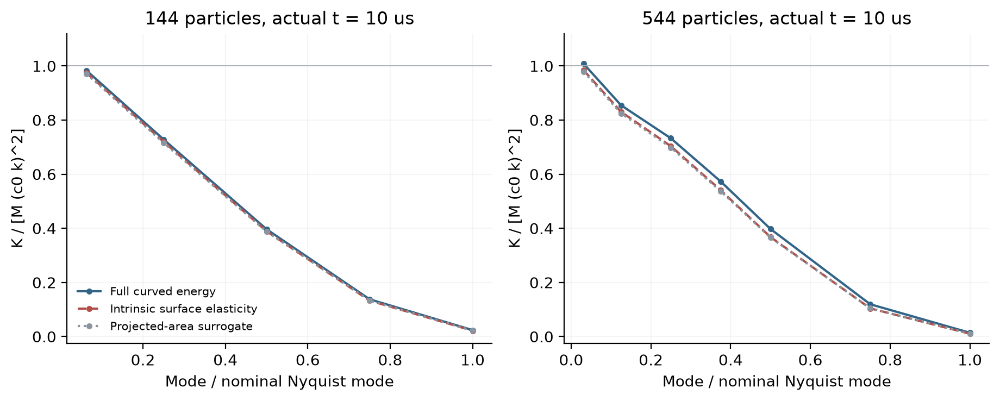
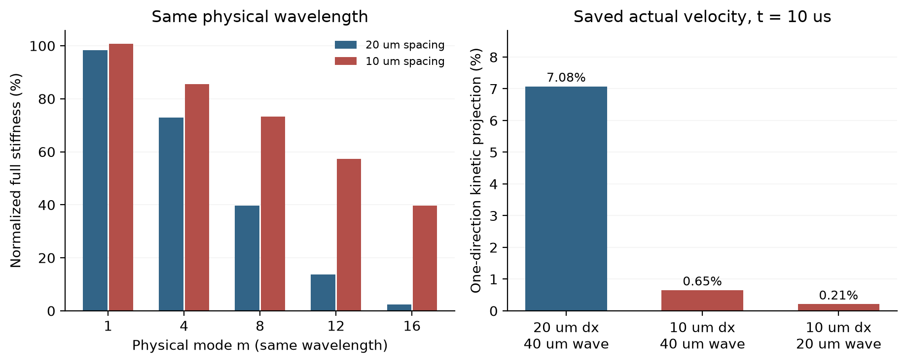
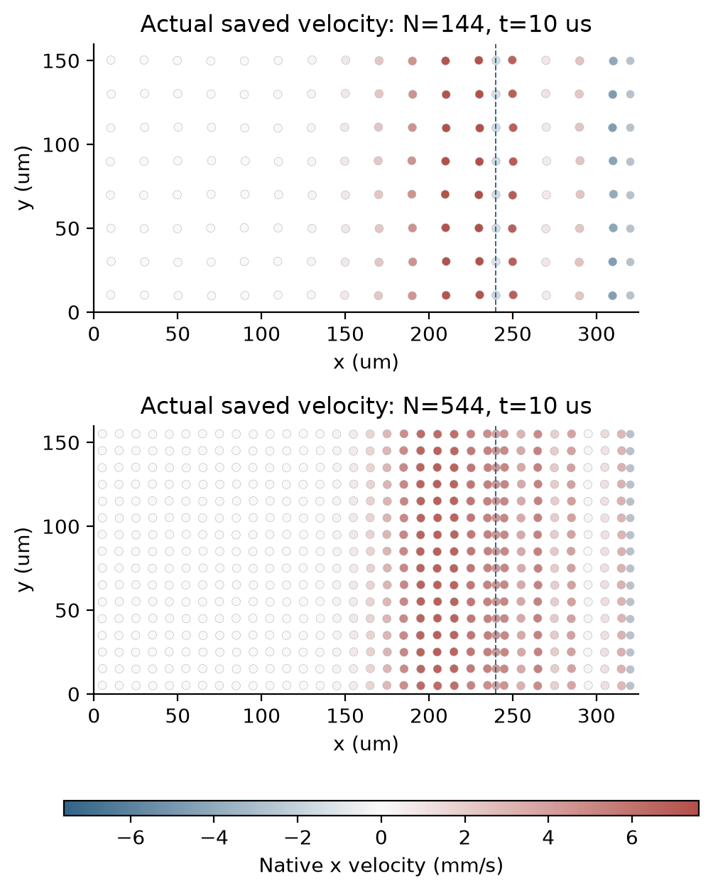

加入曲面能量，
短波恢复能力补回来了吗？
答案是：增加了一部分，但最短波长方向仍然较弱。这次直接检查真实薄膜与浴液边界的初始、10微秒状态，避免仅凭平膜的面积弹性项推断实际运动。
这里的百分比是刚度比例，不是波速比例、实际运动误差，也不是完整耦合系统的频率。完整C1仍未完成。
改变粒子细度，答案为什么还会变？
原有全域20→10微米计算在10微秒处，时间步对照差异约0.5%，但膜厚变化和位移的空间差异仍达49.56%和76.12%。先前平膜观察发现：相邻粒子交替运动时，单元面积的变化可能非常小，面积弹性也就难以提供恢复作用。
不过，真实算例还包含膜厚梯度、曲面面积、非均匀状态、活动交界与固定化学势浴液。这些因素可能改变结论。因此本轮直接使用原始完整曲面能量，并分别记录原生黏性耗散和实际速度投影。
最短波长响应偏弱是既有Voronoi粒子流体文献中的问题：Hess & Springel (2010), §5.3。本轮是当前膜模型的诊断证据，不能把这项已知现象当作新的薄膜方法创新，也没有采用文献中的人工形状校正力。
轻轻推一下，测能量的恢复斜率。
读取两档布局各自的初始和10微秒原生快照，保持液量、表面活性剂、浴液高度与势不变，给自由粒子施加沿x方向的正弦位置扰动；浴液节点固定。用原生能量梯度的变化计算方向刚度，再用能量值独立交叉检查。
扰动幅度事前固定为间距的千分之一、万分之一和十万分之一。后两档要求邻接拓扑不变，刚度与曲面面积弹性项稳定到1%，能量值与梯度的结果也需在1%内相符。没有按结果缩小步长或放宽容差。
原材料、方程、原生几何和求解器均未修改；没有采用上一轮几何候选加速路径，也没有重跑完整轨迹。6组只读原生观察累计18.16秒，产生90行幅度记录。
曲面项有贡献，短波方向仍弱。

纵轴把方向刚度除以 Mq × (c0 k)²，其中Mq是该方向的实际液体质量权重，c0≈6.983米/秒来自原材料和6微米参考平膜厚度。这只是连续长波参考尺度；实际边缘具有非均匀厚度与边界，它不是真实解，也不是要求所有方向都必须等于1的精度门槛。
蓝线包含原模型的全部自由能。红虚线是曲面面积变化带来的内禀表面弹性项；灰点线把曲面面积变化暂换成投影面积变化，仅作诊断，不能当作完整模型的可加分块。完整刚度减去内禀项的几何／预应力余项保留正负号。
同一个40微米波长，多几个粒子有帮助。

对于同一个40微米物理波长，20微米间距只有两个粒子采样，10微米间距有四个粒子；对应方向刚度从2.39%升至39.75%。因此结果支持继续检验空间分辨率，但还不能仅据此判定实际运动误差的原因。
| 间距 | 物理波长 | 完整刚度／参考 | 单方向动能投影 | 黏性投影时间 |
|---|---|---|---|---|
| 20微米 | 40微米 | 2.39% | 7.08% | 28.2微秒 |
| 10微米 | 40微米 | 39.75% | 0.65% | 10.6微秒 |
| 10微米 | 20微米 | 1.41% | 0.21% | 7.8微秒 |
最后一列为原生黏性系数投影率D/Mq的倒数，使用原材料黏度，没有拟合松弛时间。黏性没有被加进自由能。完整排液—运动线性化、模态耦合和特征值尚未计算，所以这里不是独立振子的实测周期或衰减实验。
20微米布局在该短波方向上的单独速度投影约占7.08%动能。这说明已有速度中确实有与该方向重合的分量，但这些试探方向不构成正交基；不能相加，也不能把7.08%解释成76.12%位移误差的成因比例。初始速度为零，初始动能投影记为不可用。
这些颜色来自保存的原生状态。

图中没有叠加试探正弦运动，也没有为展示重算模拟。它展示的是原有耦合算例的真实保存速度，与上面的方向扰动诊断分开。
诊断检查全部通过，空间验收仍待完成。
共30个方向，包括24个真实状态方向和6个平膜对照。平膜完整离散解析参考与原生结果的最大归一差异为3.35e-09；解析单元面积率误差低于1e-10。全部方向的最大刚度差分稳定性误差为2.9e-06，按事前归一方式比较；完整逐方向门槛见数据表。
平膜规则网格中，两粒子波长的一阶单元面积变化接近零，包含曲面项的完整能量刚度也接近零。真实状态的边界、厚度和小幅不规则布局使这个响应不再严格为零，但本轮所测最短方向仍较弱。
下一步回到实际空间检查。
先测量5微米全域布局的实际启动与单步成本，检查原生收支、能量和力门槛；再据资源证据决定是否完成新的10微秒时间／空间配对。50和200微秒仍在原验收范围内。任何预计超过两小时的计算，启动前设置每半小时监视。
独立物理法向通量与牵引力、从局部边缘预测交换系数、新薄膜元厚度比、整体条纹和保留工况实验验证仍未完成。C2交换动力学继续要求独立物理依据，不能按拟合指数选择速率。
图表、原始数据与复现
展开冻结计划、原始90行、全部节点和判据
- 事前冻结计划与公式 · 源码与构建记录 · 输入、源码和二进制哈希
- 全部6组原生状态与日志哈希 · 统计摘要 · 30方向完整判据、带符号刚度、耗散与投影
- 原生日志 · 24份原始文件逐字节清单 · 恢复脚本
- 完整原始数据分卷1
- 恢复：
python restore_raw.py REPORT_DIRECTORY NEW_OUTPUT_DIRECTORY，拒绝覆盖并逐文件验证SHA256。 - 原始实际空间失败及完整轨迹 · 此前仅面积弹性的平膜诊断
- 相关既有方法：Hess & Springel 2010 · Duffell & MacFadyen 2015；文献已本地留存，没有采用其网格校正力或平滑运动方案。